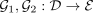
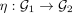
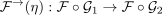
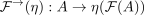
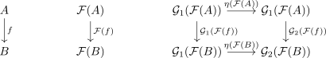

left whiskering
1. Proposition
Let  be categories,
be categories,

and be functors.
be functors.
then for a natural transformation

, left whiskering with
with  is also canonically a natural transformation
is also canonically a natural transformation

2. Proof
Let

then we get

where the last diagram is natural, by definition of a natural transformation